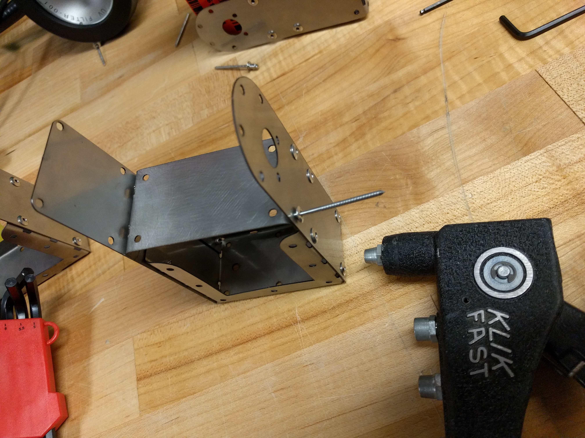
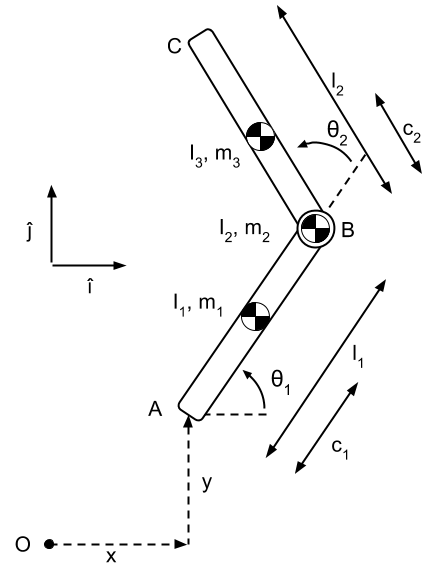

In this project we designed a 1 DOF robot to perform a forward flip. For inspiration we drew insights from the forward pike move in gymnastics. During the arial phase of this move, rotation is generated as the gymnast bends forward at the waist, with the legs kept straight. This moves the center of mass away from the hips. Our robot mimics this by including two rigid links that are actuated about a central DC motor. We generate the forward momentum by dropping the robot with an inital rotation from the vertical axis.
This is the gymnastics drill that we're trying to recreate


To fabricate the robot linkages we created a sheet metal assembly using Fusion 360, the Fablight fiber laser cutter and metal bending tools. Finally the parts were assembled using rivets. I had some trouble getting the folds in the correct place, I overcame this by tapering the relief holes so that the weakness as a result of the reliefs was centered along a single axis.


Our simulation is based off the following kinematics.
